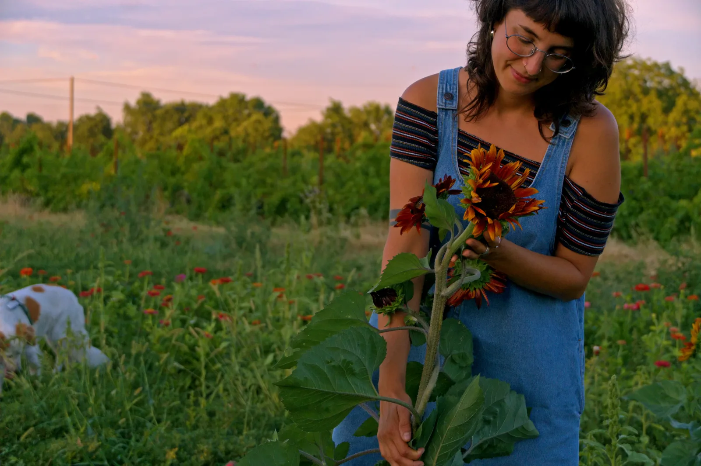
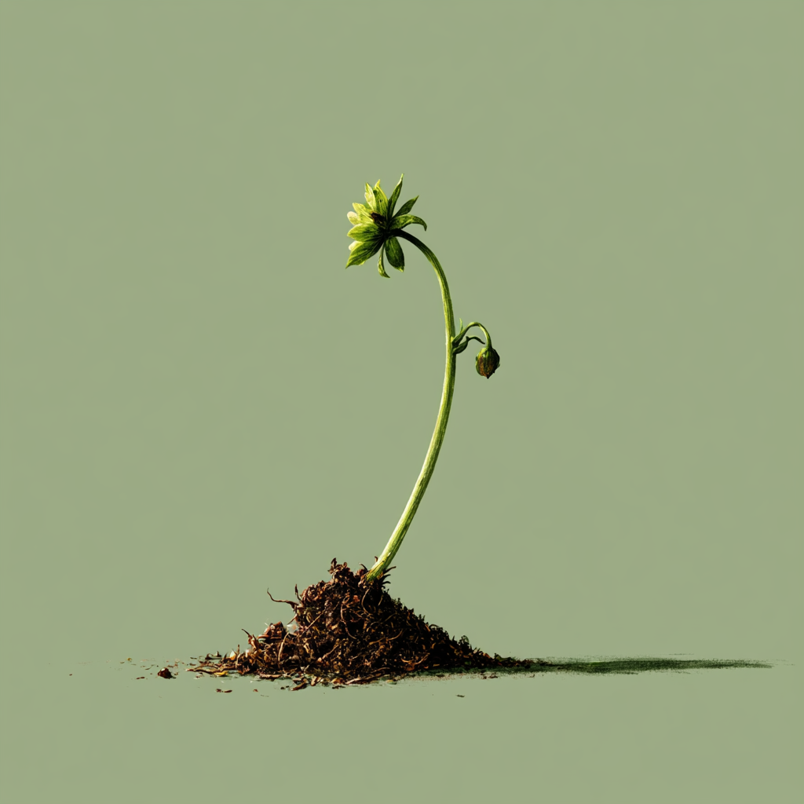
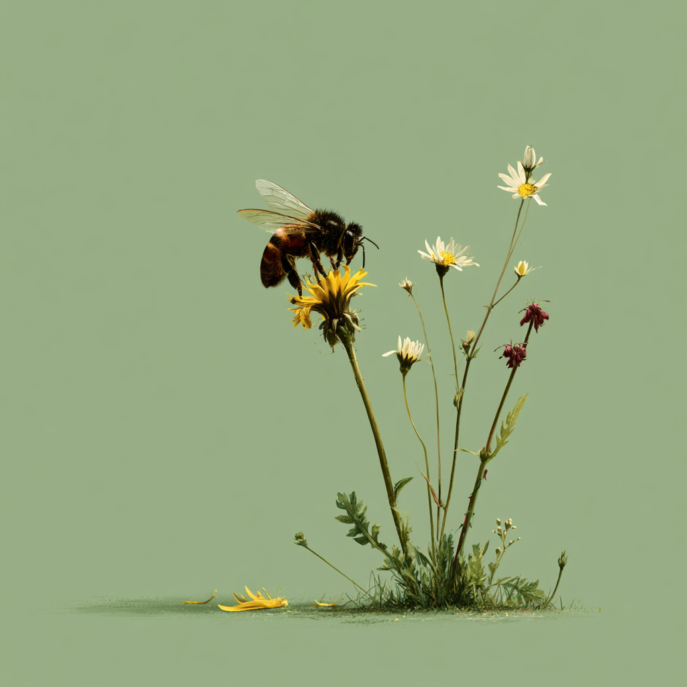
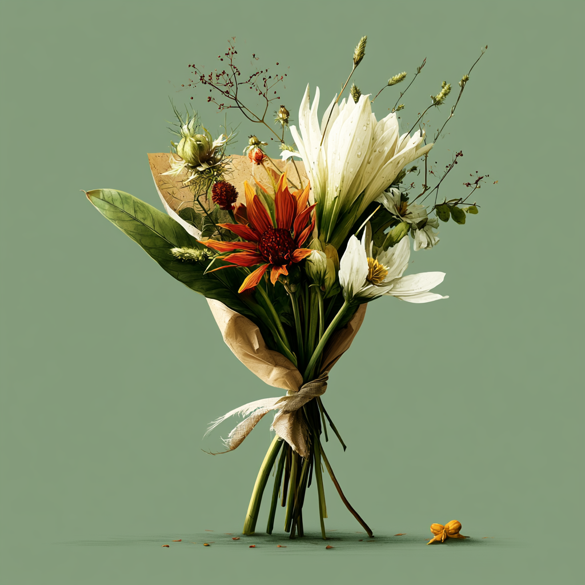

Chi sono
Una ragazza, un campo e tanta terra sotto le unghie.

La mia storia
Mi chiamo Clelia e sono cresciuta in campagna, tra i filari di un vecchio orto di famiglia e le siepi di biancospino che dividevano i campi. Mia nonna aveva sempre qualche fiorella da raccogliere — non per venderla, ma semplicemente perché diceva che una casa senza fiori è una casa triste.
Ho studiato da tutt'altra parte, ma la terra mi ha richiamata. Qualche anno fa ho preso in affitto un piccolo appezzamento vicino al paese e ho cominciato a seminare. I primi anni sono stati un disastro — lumache, siccità, aiuole storte. Ma piano piano ho imparato ad ascoltare le stagioni.
Oggi il mio campo è un posto che cambia ogni settimana: a maggio esplodono le peonie, a luglio arrivano le zinnie, in agosto i girasoli si alzano così alti che ci si perde. Raccolgo a mano ogni mattina, prima che il sole sia alto.
Come lavoro
Qualche principio che guida ogni mia giornata nel campo.

Solo stagionale
Non forzo le piante. Ogni fiore arriva quando è il suo momento. Questo vuol dire che la disponibilità cambia continuamente — ed è proprio questo che trovo bello.

Rispetto per gli insetti
Niente pesticidi. Lascio le api lavorare, pianto varietà mellifere, tollero qualche fogliolina smangiata. Il campo è anche loro, non solo mio.

Zero plastica
I bouquet sono avvolti in carta naturale o kraft. Le confezioni regalo usano nastri di cotone. Piccole scelte, ogni giorno.
Vuoi conoscermi?
Vieni a visitare il campo, partecipa a un workshop o scrivimi semplicemente per curiosità. Sono sempre felice di parlare di fiori.